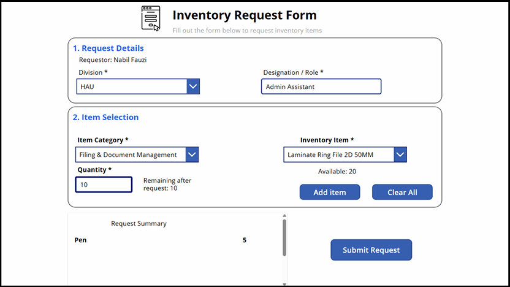

Power Apps
Provides the digital request form, item selection, quantity input, and client-side stock validation.
USER INTERFACEPROJECT 01 / BUSINESS AUTOMATION
Digitising inventory requests, streamlining approval workflows, and improving stock tracking through Microsoft Power Platform.
01 / OVERVIEW
Inventory requests and stock tracking relied on paper-based forms and spreadsheet records. This created opportunities for manual errors and made the request and approval process harder to track.
I developed a digital inventory request solution using Microsoft Power Platform. It brought request submission, approval routing, stock validation, inventory updates, and automated notifications into a connected workflow.
02 / USER INTERFACE
The Power Apps interface allows users to select inventory items, specify quantities, and submit requests through a digital form.

03 / SYSTEM ARCHITECTURE
The solution uses three Microsoft Power Platform components to connect the user interface, data storage, and automated business processes.
Provides the digital request form, item selection, quantity input, and client-side stock validation.
USER INTERFACEStores inventory records, submitted requests, requested items, and approval-related information.
DATA LAYERHandles approval routing, final stock checks, inventory updates, and automated notifications.
WORKFLOW AUTOMATIONConceptual overview of the main components, not a complete deployment diagram.
04 / KEY FEATURES
Users select categories and available items, enter quantities, and submit requests through a structured form.
Automated routing coordinates the required approval stages and records request status and approval information.
Quantity checks help prevent requests from exceeding available stock. The approval workflow rechecks availability before deducting inventory.
Scheduled workflows notify relevant recipients about low-stock items and approaching expiry dates.
05 / TECHNICAL WORK
Implemented a final availability check within the approval workflow before inventory deduction, helping address cases where stock may change while a request is awaiting approval.
Connected Power Apps, SharePoint, and Power Automate so that submitted requests, approval stages, and inventory records work together.
Migrated the solution from the development tenant to the organisation's environment, tested workflows, prepared user documentation, and supported the system handover.
06 / MY CONTRIBUTION
My responsibilities covered application development, workflow automation, data integration, validation, testing, documentation, migration, and handover. I also provided IT support during my internship and presented the solution to organisational stakeholders.
Developed during an internship. This page describes the project at a high level; no public system demo or access to internal organisational data is provided.